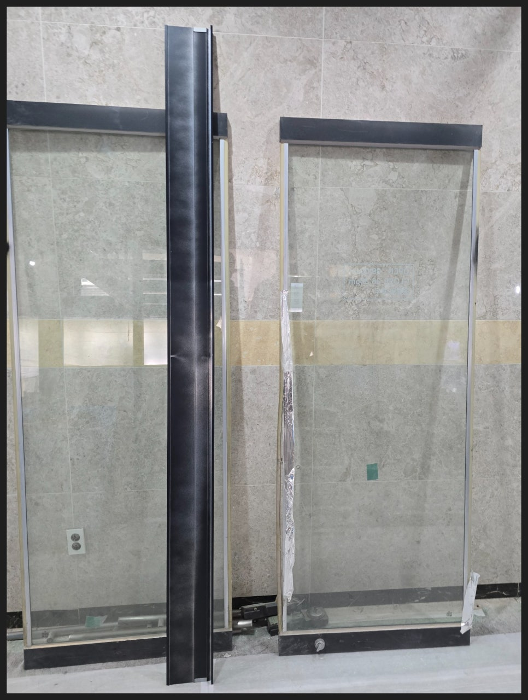
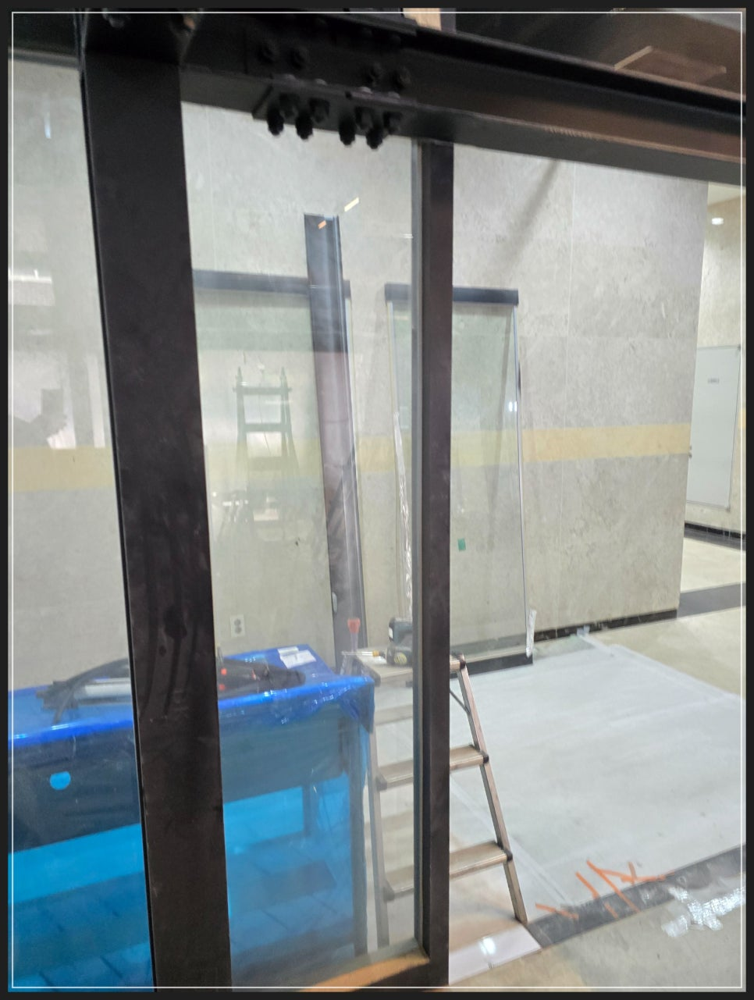
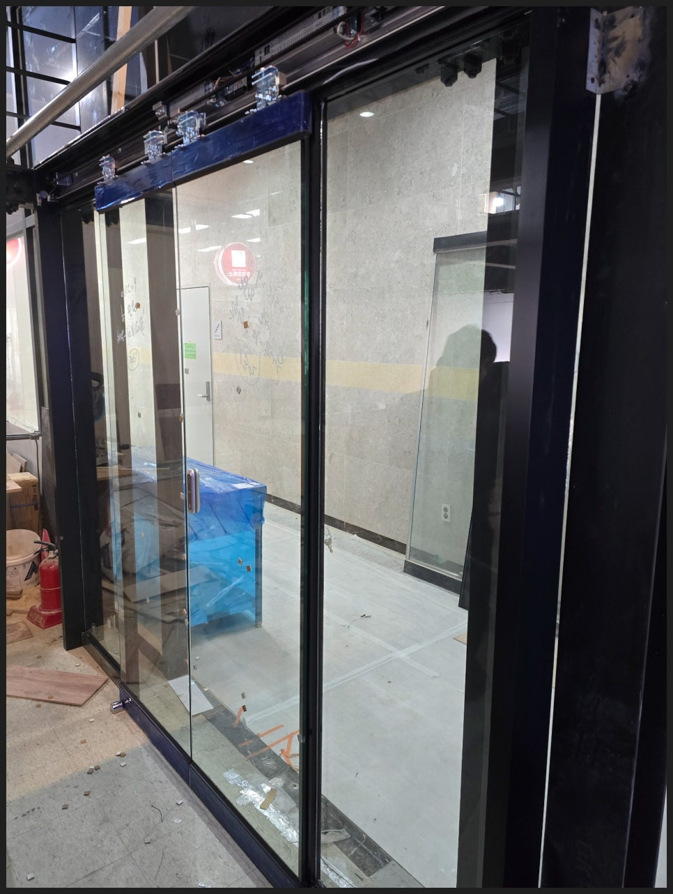

자동출입문은 하루에도 수없이 여닫히는 만큼 고장 나면 드나드는 모든 사람이 불편해집니다. 서울 성동구의 한 건물 입구에는 가운데서 좌우로 갈라 열리는 스텐 알루미늄 프레임 문을 두 명이 달았고, 센서 대신 손으로 눌러 여는 방식으로 맞췄습니다.
한눈에 보기
| 작업 | 자동출입문 설치(양쪽 열림) |
|---|---|
| 지역 | 서울 성동구 |
| 장소 | 건물 출입구 |
| 프레임 | 스텐 알루미늄 프레임 |
| 작동 방식 | 손 터치 방식 |
| 작업 인원 | 2명 |



자동출입문은 꼭 센서로 열어야 하나요?
아닙니다. 센서식과 손 터치 방식 중에 고를 수 있습니다. 자동문은 하루에도 수없이 여닫히는데, 센서 방식은 잔고장이 생기면 문이 제때 열리지 않아 드나드는 사람 모두가 불편해집니다.
이 현장은 고장 걱정을 덜기 위해 손 터치 방식을 택했습니다.
슬라이딩자동문 다는 순서
- 사다리에 올라 출입구 위에 상부 레일과 구동부를 고정했습니다. 문이 움직이는 핵심 부분이라 수평과 위치를 꼼꼼히 맞췄습니다.
- 문짝이 흔들리지 않도록 바닥 가이드 위치를 잡았습니다.
- 양쪽 문짝이 가운데에서 정확히 만나도록 위치를 조정했습니다.
- 작동은 손 터치 방식으로 맞춰 마무리했습니다.
건물자동문 비용은 어떻게 정해지나요?
출입구 크기, 프레임, 유리 사양에 따라 금액이 달라집니다.
출입구 정면 사진과 천장 쪽 사진을 보내 주시면 확인 후 안내해 드립니다.
자주 묻는 질문
- Q. 자동출입문 설치는 몇 명이 하나요?
- 현장마다 다르지만 이 현장은 2명이 작업했습니다. 문짝과 상부 구동부를 맞춰 다는 일이라 2명이 안전합니다.
- Q. 한쪽 열림과 양쪽 열림은 어떻게 고르나요?
- 출입구 폭과 드나드는 사람 수에 맞춰 고릅니다. 사진을 보내 주시면 현장에 맞는 방식을 안내해 드립니다.